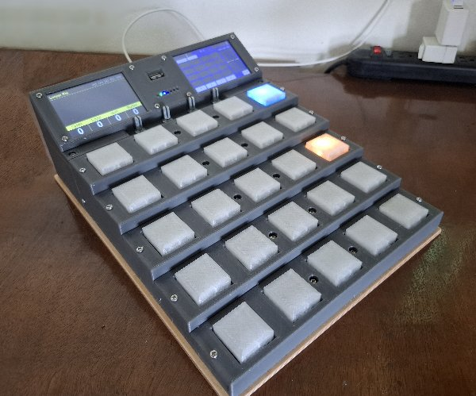
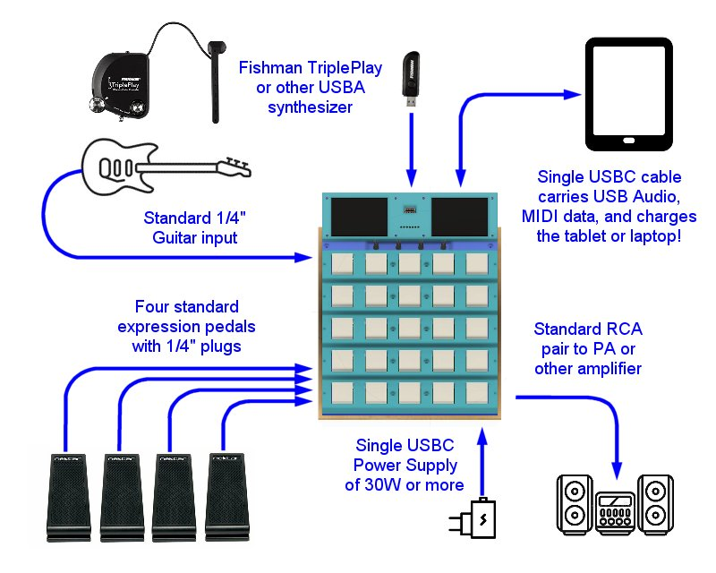

Home
What is teensyExpression3?
teensyExpression3 is intended to be and all-in-one
guitar effects and synthesizer foot pedal and looper that gives a live
performer a USB MIDI Host and Controller, and a USB Audio Interface,
providing sophisticated control of a set of guitar effects and an
external synthesizer, typically running on an iPad or other tablet,
phone, or laptop, as well as a powerful internal Mutli-Track Looper
... while, at the same time, minimizing the number of
cables and cords needed to setup or tear-down at live gigs.

teensyExpression3
- is a USB Audio Device that has a standard 1/4" guitar jack for input and
a pair of RCA audio outputs to connect to any PA or amplifier.
- has an internal USB Hub that sends and receives USB Audio and Midi to/from, and charges,
an iPad, or other phone, tablet, or computer, over a single USBC cable.
- is a USB Midi Controller with 25 buttons, each with an individual multi-colored LED,
four rotary controllers with push buttons, and two touch screens.
- has 1/4" jacks for plugging in four standard, inexpensive expression pedals.
- has a built-in Multi-Track Looper which, unlike any other available guitar looper,
provides four separate sequential loops, each consisting of up to four layers of
recorded clips.
- is powered by a single USBC connector, using any commonly available external
USBC power supply of 30 watts or more.

Documentation Overview
ALL of the information needed to build teensyExpression3 as a DIY project
is available in this and linked github repos.
- All of the 3D printing designs and STL files are in this repo.
- All of the electronics schematics and PCB design files are in this repo.
- The high level design documentation and user manual are in this repo.
The software and detailed technical design documentation is split
among several separate repositories. THIS repository contains the TE3.ino program
that is the main USB Midi Device and central-coordinator running on a teeensy4.1,
along with the main overall technical documetation for the whole system, including this
page, as well as:
- An overview
of the full system architecture and design
- A history of the prototypes
I created along the way
- Details about the circuits
used in the box
- A more detailed look at the design of the software
- The initial implementation
effort for the project
- Implementation deetails
found along the way
In addition to this repository, the other two programs in the system
are the TE3_audio.ino program and the Looper program.
- The TE3_audio
repository contains the TE3_audio.ino program which is the USB Audio Device
running on a teensy4.0 with a teensy Audio shield,
and its associated technical documentation.
- The circle-Looper
repository contains the source code for the Looper program that runs
in bare metal on a Raspberry Pi Zero2W, along with its own
associated technical and historical documentation.
Please also see
In addition to the above three main software repositories, there are also a
number of repositories containing other pieces of code that go into the teensyExpression3
system.
- The TE3_common
Arduino library contains functionality and definitions common to the
TE3 and TE3_audio INO programs.
- The myDebug
Arduino library contains debugging output routines that I use in my
Arduino-like projects, including this TE3 project.
- The circle-prh repo contains
my extensions to the circle bare metal development environment including
the audio and windowing subsystems used by the Looper
- The circle repo contains
my fork of the circle bare metal development environment.
Besides requiring the installation of the teensyDuino board in the
Arduino IDE as well as the installation of a number of specific
Arduino Libraries that are detailed elsewhere, my github account includes
a number of other repos used in teensyExpression3 that I decided to fork either for
long term code stability, or because I needed to make minor modifications
to the publically available versions:
- I slightly modified Paul's USBHost_t36
Arduino library to allow me receive incoming midi data directly from the host rx interrupt.
- I have taken a fork of Paul's ILI9488_t3
Arduino-library for long term code stability and because I needed to fix some crashing bugs
in its usage of the default, fixed width pixel fonts, because I need those in the TE3.ino program
- Years ago, I took a fork of the Arduino base64
library for long term code stability and I still use that today.
There is more history of the TeensyExpression and my vGuitar systems
at the following links:
- TE1
teensyExpression1 was the first version of the foot pedal that ran on a teensy3.6
- TE2
teensyExpression2 was a second version of the foot pedal that ran on a teensy3.6
- teensyPiLooper -
the program that ran on a teensy3.2 inside the Looper Box that connected
the older Looper1 and Looper2 encarnations to the TE1 and TE2 foot pedals.
- the synthBox that
preceeded the Looper1 box, running the Looper program well before
I made the first teensyExpression pedal, and was using various other floor based
midi controllers,
- various projects on hackaday that I wrote
when I first started developing this vGuitar system and before I standardized
on presenting everything on github.
- various videos on youtube
including a few early demonstration songs recorded using the combined system(s)
at various stages of development.
In addition to all that, there is a putty-like serial monitor/terminal program
I wrote that can interface from my laptop/desktop to the teensyExpression3 (or many
other devices) for debugging, monitoring, and file exchange capabilities:
- buddy - a putty-like serial
terminal/monitor program which also provides a fileClient with a windowed user
interface. That repo also contains a fully-compiled Installable version of the
program for Microsoft Windows in addition to the source code for the program itself.
{kind=link}